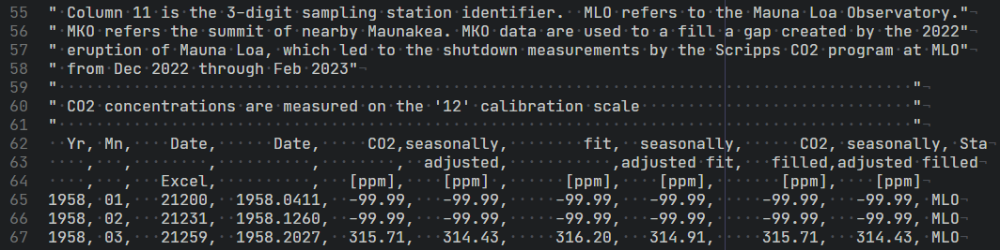
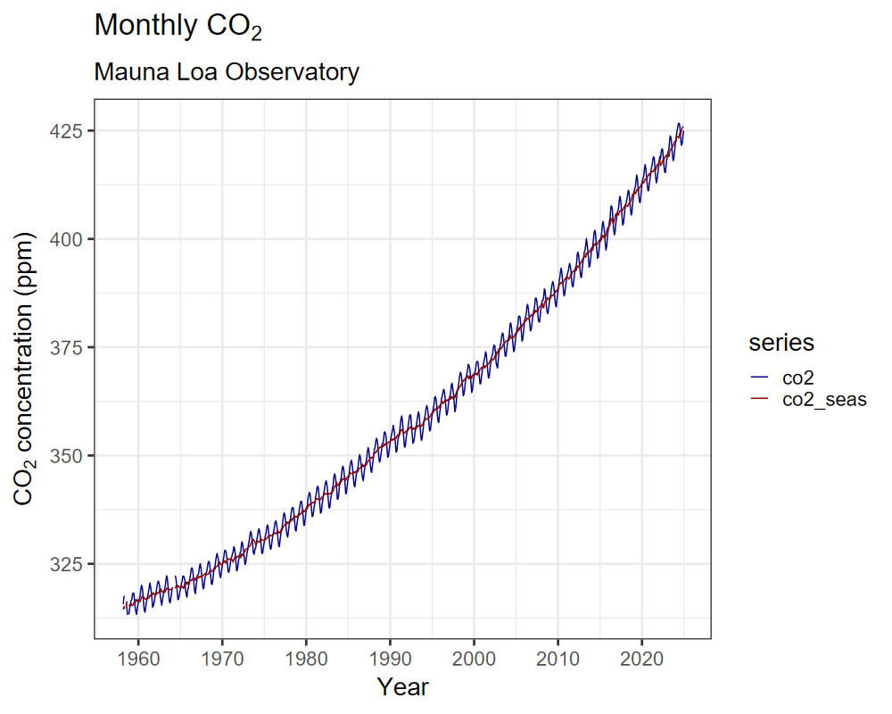
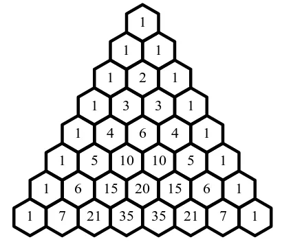
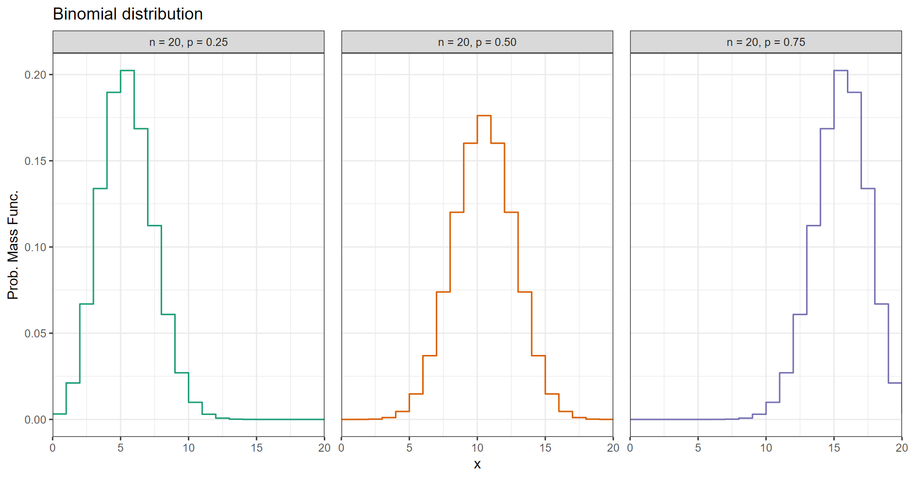
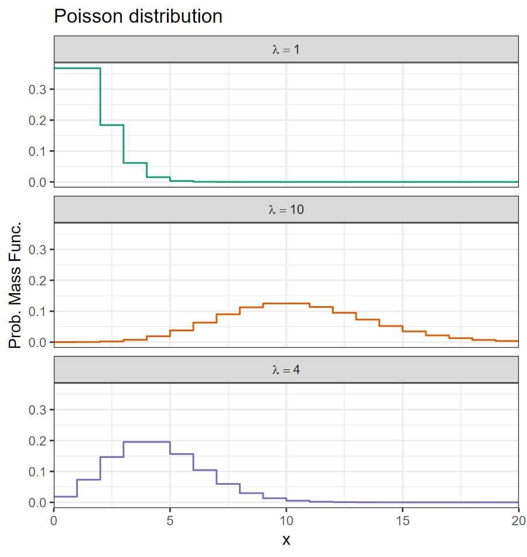
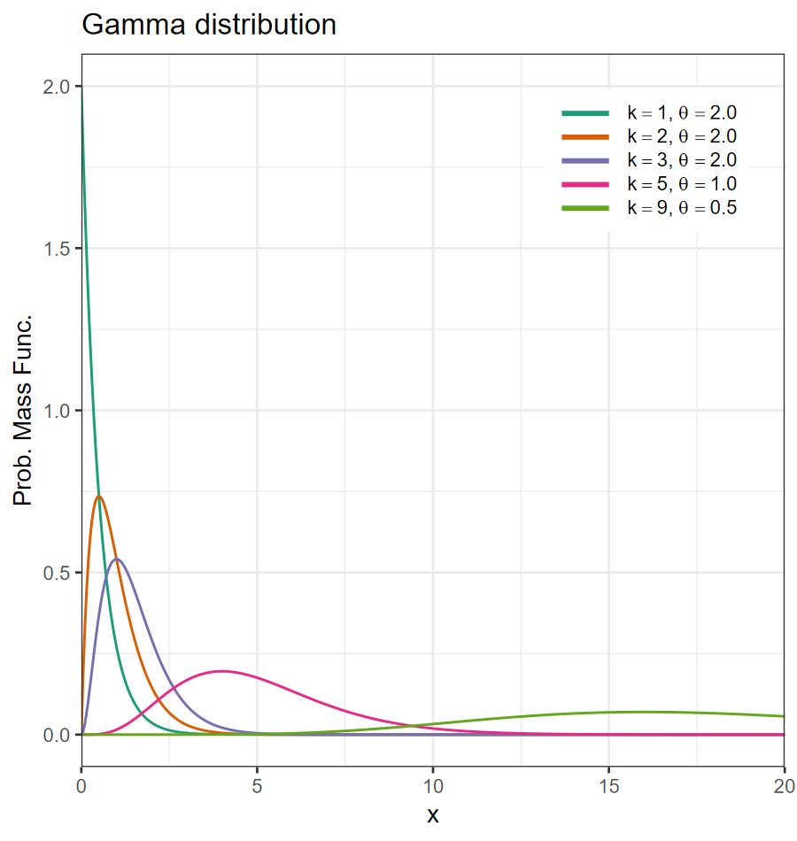
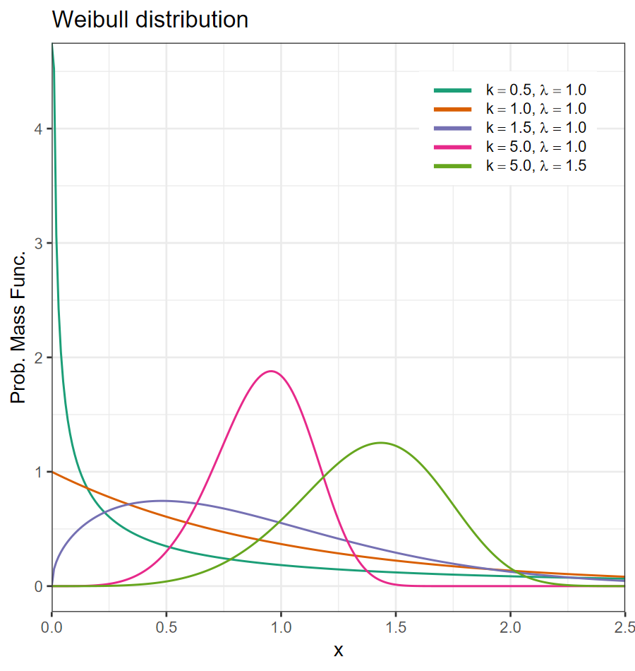

binding and
joining
Go to the GitHub Classroom and accept the “Practice with files” assignment:
Open RStudio and create a new project from version control, and give it the URL for the new assignment repository.
This assignment is only for practice and there is nothing to turn in.
| Function | Description |
|---|---|
| read_csv() | Columns separated by commas |
| read_csv2() | Columns separated by semicolons |
| read_tsv() | Columns separated by tab characters |
| read_table() | Columns separated by any white-space |
| read_delim() | Columns separated by an arbitrary character |
| read_fwf() | Columns have fixed width |
read_csv(), etc.read_csv(<filename>, ...)
| Argument | Description | Example |
|---|---|---|
| col_names | Names for the columns | col_names = c(“year”, “month”, “precip”) |
| col_types | Data types of each column | col_types = cols(col_number(), col_character()) |
| coL_select | Only read certain columns | col_select = starts_with(“cc_”) |
| na | Cell contents to interpret as missing values | na = c(“” , “NA”, “-99.99”) |
| comment | Ignore everything after this character | comment = “#” |
| skip | Skip lines at the top | skip = 9 |
| name_repair | Fix names of columns | name_repair = “universal” |
janitor and set
name_repair = make_clean_names (no quotation marks).read_csv for a complete listing.practice-with-files project, open the file
read_co2.R
monthly_in_situ_co2_mlo.csv
Open the file in RStudio:

Skip the first 64 rows and manually supply the column names:
co2 <- read_csv("monthly_in_situ_co2_mlo.csv", skip = 64,
col_names = c("year", "month", "date_excel", "date",
"co2", "co2_seas",
"co2_fit", "co2_fit_seas",
"co2_filled", "co2_filled_seas",
"station"),
col_select = c("year", "month", "date",
"co2", "co2_seas",
"station"),
na = "-99.99")
head(co2)## # A tibble: 6 × 6
## year month date co2 co2_seas station
## <dbl> <chr> <dbl> <dbl> <dbl> <chr>
## 1 1958 01 1958. NA NA MLO
## 2 1958 02 1958. NA NA MLO
## 3 1958 03 1958. 316. 314. MLO
## 4 1958 04 1958. 317. 315. MLO
## 5 1958 05 1958. 318. 315. MLO
## 6 1958 06 1958. NA NA MLOco2 |> pivot_longer(c(co2, co2_seas), names_to = "series",
values_to = "co2") |>
ggplot(aes(x = date, y = co2, color = series)) +
geom_line(line_thickness = 1) +
scale_color_manual(values = c(co2 = "darkblue",
co2_seas = "darkred")) +
scale_x_continuous(breaks = seq(1950, 2025, 10)) +
labs(x = "Year",
y = expression(paste(CO[2], " concentration (ppm)")),
title = expression(paste("Monthly ", CO[2])),
subtitle = "Mauna Loa Observatory")You could use
labs(x = "Year", y = "CO2 concentration (ppm)",
title = "Monthly CO2",
subtitle = "Mauna Loa Observatory")but this example illustrates how to use mathematical notation, such as subscripts, in plot captions

read_rds() and write_rds() read and write
a single R object to a .Rds file.readxl and writexl packages have
functions for reading and writing Excel .xls and
.xlsx spreadsheet files.rjson and jsonlite packages have
functions toJSON() and fromJSON() to read and
write JSON filessf package has the functions
read_sf() and write_sf() to read and write GIS
shapefilesrvest package lets you automate scraping data
off web pagesDBI and dbplyr packages have
functions to read and write from common databases:
csv, etc.)joins.R in RStudiobind_rows() combines multiple data frames, row by
row
df_1 <- tibble(num = 1:5, letter = letters[num])
df_2 <- tibble(num = 15:20, letter = letters[num])
bind_rows(df_1, df_2)## # A tibble: 11 × 2
## num letter
## <int> <chr>
## 1 1 a
## 2 2 b
## 3 3 c
## 4 4 d
## 5 5 e
## 6 15 o
## 7 16 p
## 8 17 q
## 9 18 r
## 10 19 s
## 11 20 tbind_cols() combines column by column
## # A tibble: 10 × 2
## num letter
## <int> <chr>
## 1 1 a
## 2 2 b
## 3 3 c
## 4 4 d
## 5 5 e
## 6 6 f
## 7 7 g
## 8 8 h
## 9 9 i
## 10 10 jfull_join(), right_join(),
full_join(), inner_join() combine data frames
by matching corresponding columns
state_pop <- tibble(state = c("AL", "GA", "MS", "TN"),
pop = c(5157699, 11180878, 2943045, 7227750))
state_gdp <- tibble(state = c("AL", "TN", "MS", "GA"),
gdp = c(318080, 545695, 156026, 877746))
full_join(state_pop, state_gdp)## # A tibble: 4 × 3
## state pop gdp
## <chr> <dbl> <dbl>
## 1 AL 5157699 318080
## 2 GA 11180878 877746
## 3 MS 2943045 156026
## 4 TN 7227750 545695by column is the same in all data frames,
full_, left_, _right_, and
innter_ are the same
by column is different, different joins keep
different sets of rows.## # A tibble: 5 × 2
## month days
## <chr> <dbl>
## 1 Jan 31
## 2 Feb 28
## 3 Mar 31
## 4 Apr 30
## 5 May 31## # A tibble: 4 × 2
## month order
## <chr> <dbl>
## 1 Jan 1
## 2 Feb 2
## 3 Jun 6
## 4 Jul 7## # A tibble: 7 × 3
## month days order
## <chr> <dbl> <dbl>
## 1 Jan 31 1
## 2 Feb 28 2
## 3 Mar 31 NA
## 4 Apr 30 NA
## 5 May 31 NA
## 6 Jun NA 6
## 7 Jul NA 7## # A tibble: 2 × 3
## month days order
## <chr> <dbl> <dbl>
## 1 Jan 31 1
## 2 Feb 28 2## # A tibble: 5 × 2
## month days
## <chr> <dbl>
## 1 Jan 31
## 2 Feb 28
## 3 Mar 31
## 4 Apr 30
## 5 May 31## # A tibble: 4 × 2
## month order
## <chr> <dbl>
## 1 Jan 1
## 2 Feb 2
## 3 Jun 6
## 4 Jul 7## # A tibble: 5 × 3
## month days order
## <chr> <dbl> <dbl>
## 1 Jan 31 1
## 2 Feb 28 2
## 3 Mar 31 NA
## 4 Apr 30 NA
## 5 May 31 NA## # A tibble: 4 × 3
## month days order
## <chr> <dbl> <dbl>
## 1 Jan 31 1
## 2 Feb 28 2
## 3 Jun NA 6
## 4 Jul NA 7prob_dist.R in RStudiornorm(n, mean sd): sample
n random numbers from a normal distributiondnorm(x, mean, sd): get the probability
density for a normal distribution at x
qnorm(p, mean, sd): get the quantile
for probability p: what value of \(x\) has cumulative probability \(p\)?pnorm(q, mean, sd): get the cumulative
probability at \(q\).pnorm and qnorm are inverses:
pnorm(qnorm(x)) = x, for \(0 <
x < 1\), and qnorm(pnorm(x)) = x as long as \(x\) is not ridiculously large.| Name | R functions |
|---|---|
| Normal | rnorm,dnorm,pnorm,qnorm |
| Lognormal | rlnorm,dlnorm,plnorm,qlnorm |
| Beta | rbeta,dbeta,pbeta,qbeta |
| Cauchy | rcauchy,dcauchy,pcauchy,qcauchy |
| Chi Squared | rchisq,dchisq,pchisq,qchisq |
| Exponential | rexp,dexp,pexp,qexp |
| Gamma | rgamma,dgamma,pgamma,qgamma |
| Uniform | runif,dunif,punif,qunif |
| Weibull | rweibull,dweibull,pweibull,qweibull |
| Name | R functions |
|---|---|
| Binomial | rbinom,dbinom,pbinom,qbinom |
| Poisson | rpois,dpois,ppois,qpois |
| Geometric | rgeom,dgeom,pgeom,qgeom |
Number of heads for tossing a coin \(n\) times, with probability \(p\) of coming up heads on any toss.
\[ X \sim \mathcal{B}(n, p) \]
Probability of \(k\) heads in \(n\) tosses: \[ \mathbb{P}(X = k) = \left(n \atop k\right) p^k (1 - p)^{n - k}, \] where the binomial coefficient \[ \left(n \atop k\right) = \frac{n!}{k! (n-k)!} \]

\(\left(n \atop k\right)\) is the number of different ways to get \(k\) heads in \(n\) tosses.

The Poisson distribution describes the probability of \(k\) heads when \(n \times p = \lambda\)
\[ \mathbb{P}(X = k) = e^{-\lambda}\: \frac{\lambda^k}{k!} \]


